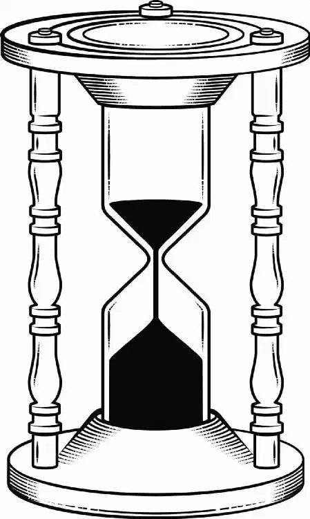

Four Months Later London
The Wonder sailed up the Thames into the heart of London. Collecting her things, Alice moved about the captain’s cabin. She tucked her father’s watch into her coat pocket, even though it had stopped working a week earlier. Ever since her father had passed away, Alice had carried the pocket watch with her everywhere, almost like a talisman.
She scanned her cabin one last time, then headed up to watch the Wonder pull alongside a pier. A slender f igure in a gray cloak caught her eye. With a cry of joy, Alice darted down the gangplank.
“Mother!” Alice called as she ran toward her.
F linging her arms around her mother, she pulled her into a tight embrace. Helen Kingsleigh returned the hug a bit more stiff ly, softly patting Alice on the back.
“Well, here you are ... f inally,” Helen said as she stepped away.
Alice drew a breath to launch into stories of her exploits—she had so much to tell her mother—but she stopped short as an unfamiliar man approached them.
He was young and handsome. As Alice studied his simple, clean suit for a clue, she noticed the insignia stamped on a briefcase he carried. So he was from the f irm, here to check up on her cargo.
“You and the Wonder have been expected a year, Miss Kingsleigh,” he said.
Straightening her shoulders, she faced the stranger. “There were ... complications,” she said. She doubted anyone else could have achieved what she had, and Lord Ascot would be pleased with her discoveries, despite the delay.
“I daresay the cargo will account for time,” the man responded quickly, noting Alice’s stiffness. “I’m James Harcourt, ma’am. Clerk to the f irm.” He held out his hand and Alice shook it, softening a bit as James nodded respectfully.
“I should like to see Lord Ascot,” Alice said as the clerk led her and her mother to a hansom cab. Pausing at the cab’s door, James gazed at her solemnly. “Ah, I’m afraid Lord Ascot passed away whilst you were at sea.”
Stunned, Alice turned to her mother, who nodded sadly in conf irmation. Alice bowed her head, the loss weighing on her.
“The title has passed to his son,” James continued.
“Hamish?” Alice struggled to hide her astonishment.
“Indeed, now also chairman of the board,” James said.
Alice would not have been more shocked if the clerk had climbed atop the hansom and belted out “God Save the Queen.” She could not picture Hamish—droopy-faced Hamish—in charge of anything, much less the company her father had begun. She clambered into the hansom, mulling over the news.
Of course the title and company shares would have passed to Hamish, but he’d always been so uninterested in business matters that his father had given up trying to involve him. Yet she hoped they’d be able to work together. Perhaps the years had changed him. Perhaps he had grown up. At the very least, she hoped he would stay out of her way as she broadened the company’s trade routes.
Deep in thought, she was oblivious to the blue butterf ly struggling to keep up with the cab. When they pulled up to her childhood home, she followed her mother inside.
With a decisive click, the front door swung shut just before the blue butterf ly reached it. The creature seemed almost to swat angrily at the solid wood before f luttering up to a window instead. Its wings beat soundlessly against the glass.
Alice stood in the front hall, a bit disappointed. While the outside remained the same, the interior was dark and cold. No f ires had been lit to welcome them home and the air felt dusty.
Shivering slightly, Alice stepped toward the drawing room, planning to light a f ire herself, but the sight of the room stopped her short. Half the furniture was missing. Even the sideboard table was gone, an imprint of its outline on the f loor the only sign it had ever been there at all.
Her mother smiled awkwardly at Alice’s confused expression and headed downstairs.
“Always warmer down here,” she offered.
Once inside the basement kitchen, Helen plucked cups and saucers from the cupboards and set them out for tea. Alice spotted new lines on her mother’s face and streaks of gray in her hair. Time seemed to be taking its toll on her.
“Now then,” Helen said, breaking the silence. “Your letters were so infrequent. I hardly know where you have been all this time.”
“Oh, Mother! The Wonder brought back a hundred kinds of tea from China!” Alice began eagerly, setting aside her worries about her mother for the moment. “And silks of colors you’ve never seen before. I met with emperors and beggars ... holy men ... and pirates!”
Helen’s smile disappeared.
“Were you never afraid?” Helen asked worriedly.
“When I was, I thought of Father,” Alice said.
“You sound like him. He’d be so proud. But, my dear, an extra year? At my age you realize that time is a cruel master.”
Alice absently rubbed her f ingers over her father’s pocket watch. “And a thief to boot,” she murmured darkly. Time was no friend of hers, having stolen her father too young. “The best are taken f irst.”
Helen turned back to the tea. “And the dregs left behind, I suppose?” she muttered to herself.
“I hear the Ascots are marking Hamish’s succession tonight,” Helen said as she sank into an armchair opposite her daughter.
“Perfect. We should go,” Alice said. She needed to establish her working relationship with Hamish, and there was no time like the present.
“Without an invitation?” Helen blinked at her daughter, her brow furrowed.
“Lady Ascot once said we would always be welcome.” Alice waved her hand nonchalantly. “But, Alice ...” her mother began.
“Besides, I have a proposition for Hamish,” Alice continued.
Helen pursed her lips. “He married last year, Alice. He seems to have gotten over your public rejection—although I would imagine the other three hundred guests might still remember it.”
“A business proposition, Mother!” Alice nearly rolled her eyes. Then she sat forward, unable to contain her excitement. “It’s time we saw the world as our partner, not a pocket to be picked. When I return to China, I’ll prove it’s so.”
“You aim to leave so soon?” She gathered her next words carefully. “There are matters here that would benef it from your attention.”
Alice patted her mother’s hand reassuringly. “After my next voyage, you won’t have to worry anymore. About anything.”
“Am I permitted to worry tonight?” Helen asked. Answering her mother with only a grin, Alice set off upstairs.
Alice carried her luggage up to her childhood room and pushed open the door. It was like stepping directly into the past.
Her favorite doll was propped up on the bed, and her collection of seashells cluttered a sidetable. Plunking down her bag, Alice wandered to the writing desk. She picked up a sampler she’d made at age twelve. The embroidery perfectly formed her father’s favorite motto: “Six Impossible Things Before Breakfast.” Sighing softly, she brushed her f ingers over the blue thread, then set the sampler aside.
She found a stack of drawings and watercolors of Underland. She smiled as she thumbed through them. Each of them came to life in her hands as the vivid memories replayed in her mind.
Her father, the only person who would have believed her stories of Underland, was gone. And despite everything she had accomplished in this world, including her voyages at sea and her captain’s title, her mother still only saw her as someone in need of a husband. Her sister, on a mission to spread Christianity in Africa, agreed, no doubt.
Pulling back the curtain from a window, Alice stared out over the rooftops of London. Why was it so hard for her family to accept her? Couldn’t they see she was meant for grand adventures? Well, if they needed more proof, Alice would give it to them ... starting with her meeting with Hamish.
